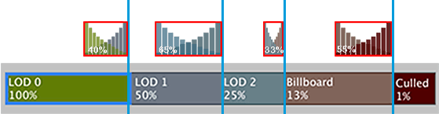

To make LODThe Level Of Detail (LOD) technique is an optimization that reduces the number of triangles that Unity has to render for a GameObject when its distance from the Camera increases. More info
See in Glossary transitions smooth, enable LOD cross-fading. For more information, refer to Introduction to level of detail.
Follow these steps:
In the Universal Render Pipeline (URP) Asset, enable LOD Cross Fade.
In the LOD GroupA component to manage level of detail (LOD) for GameObjects. More info
See in Glossary component, set Fade Mode to Cross Fade.
For SpeedTree assets, select Speed Tree. Unity selects this automatically when you import a SpeedTree model with an .spm or .st extension. For more information, refer to the Transition SpeedTree model vertices section.
To customize cross-fade transitions, do either of the following:
Depending on your project, setting a single transition time can reduce the number of transitioning LODs, but make transitions more noticeable when the cameraA component which creates an image of a particular viewpoint in your scene. The output is either drawn to the screen or captured as a texture. More info
See in Glossary and GameObjectThe fundamental object in Unity scenes, which can represent characters, props, scenery, cameras, waypoints, and more. A GameObject’s functionality is defined by the Components attached to it. More info
See in Glossary are not moving.
To set a transition width for each LOD in a LOD Group, follow these steps:
Make sure Animate Cross-fading is disabled.
Select a LOD box, for example the green LOD 0 box.
In the LOD panel, set a Fade Transition Width value. A smaller value delays the beginning of the transition and makes the transition shorter.

To set a single transition time for all LODs in a LOD Group, follow these steps:
To provide your own blending technique, write a custom shader depending on your application type and asset production pipeline.
Unity does the following:
unity_LODFade uniform variable.LOD_FADE_CROSSFADE keyword when the Fade Mode property is set to Cross Fade.
If you set Fade Mode to Speed Tree, Unity interpolates the vertices of SpeedTree models, to gradually transform the model’s geometry from the current to the next LOD.
Unity can’t interpolate between vertex positions for the following models and transition types: